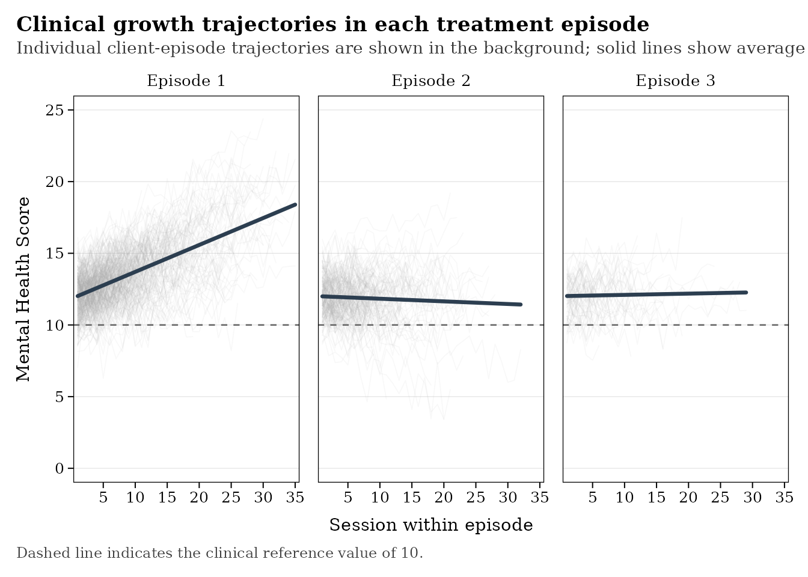

Overview
This article introduces a typical leap workflow,
progressing from preparing raw data to identifying, describing,
visualizing, and modeling repeated episodes of treatment.
Prepare data
leap works with longitudinal data frames, in which each
row represents a treatment session for one client. At minimum, the raw
data should include a core set of variables identifying the client,
session, session date, along with one or more outcomes measured during
treatment.
The example below uses simulated data included with leap
to illustrate the expected data structure:
head(raw_df)## client_id session_id session_date outcome
## 1 client_1 1 2018-01-11 12.30153
## 2 client_1 2 2018-02-05 12.12299
## 3 client_1 3 2018-02-18 13.76293
## 4 client_1 4 2018-03-01 11.10154
## 5 client_1 5 2018-03-16 12.53960
## 6 client_1 6 2018-04-15 11.56142It is important to be aware that leap uses a
standardized set of variable names throughout its functions. If the
original data use different names, cols_standard() can be
used to rename the core variables before proceeding.
Once the variables have been standardized, check_raw()
can be used to verify that the data contain the information required to
identify treatment episodes:
check_raw(raw_df)## variable column type present
## 1 client client_id Required TRUE
## 2 date session_date Required TRUE
## 3 outcome outcome Required TRUE
## 4 session_lag session_lag Derived FALSE
## 5 episode_id episode_id Derived FALSE
## 6 episode_session episode_session Derived FALSE
## 7 client_episode_id client_episode_id Derived FALSE
## 8 n_episodes n_episodes Derived FALSE
## action
## 1 Ready
## 2 Ready
## 3 Ready
## 4 Run add_session_lag()
## 5 Run add_episode_id()
## 6 Run add_episode_session()
## 7 Run add_client_episode_id()
## 8 Run add_episode_count()The output from this initial check identifies the variables already
present in the data, the episode-related variables that still need to be
created, and the corresponding add_*() function to create
the new variable.
Add variables
Once the session-level data have been prepared, the
add_*() family of functions can be used to generate the
variables needed to represent treatment episodes in the data. These
additional variables are:
- session_lag: number of days elapsed since the previous session
- episode_id: identifies each distinct treatment episode within a client
- episode_session: identifies the consecutive session number within each treatment episode
- n_episodes: indicates the total number of treatment episodes for each client
- client_episode_id: provides a unique identifier for each client-episode combination
Each variable can be added individually using their respective
add_*() functions or created simultaneously using the
add_episode_vars() wrapper function:
# add variables simultaneously
episode_df <- add_episode_vars(raw_df) Summarize episodes
After all episode variables have been added, it is useful to examine
the resulting data before proceeding. The check_episodes()
function provides an overview of the episode structure and evaluates
several potential data issues, including total number of observations,
unique clients, unique treatment episodes, the number of treatment
episodes, session and chronological ordering, and missing values.
check_episodes(episode_df)## obs clients episodes na_total na_outcomes na_dates correctly_ordered
## 1 7599 400 3 400 0 0 TRUE
## sequential_sessions chronological_dates
## 1 TRUE TRUEImportantly, check_episodes() also warns users when
treatment episodes contain too few observations to estimate change or
when the number of observations may result in unreliable estimates.
Treatment episodes can be further summarized using the
describe_episodes() function. Whereas
check_episodes() focuses primarily on data structure and
potential issues, describe_episodes() provides descriptive
summaries of service utilization and the characteristics of each
treatment episode represented in the data.
describe_episodes(episode_df)## episode_id n_clients n_sessions mean_sessions mean_duration_days
## 1 1 400 4663 11.66 197.34
## 2 2 238 2237 9.40 154.24
## 3 3 96 699 7.28 116.45
## mean_lag_days mean_outcome
## 1 18.52 13.59
## 2 30.78 11.87
## 3 34.78 12.07Visualize episodes
Before fitting statistical models, it is often useful to visually
inspect patterns of change within and across treatment episodes. The
plot_*() family of functions provides several ways to
explore these patterns. For example, plot_episode_curves()
displays individual client growth curves alongside the average linear
growth curve within each episode.
plot_episode_curves(episode_df)
Visualizing each episode growth curve can reveal differences in starting levels, episode duration, rates of change, and variability between different episodes. Because the clients contributing to each episode number may differ, these plots are primarily descriptive and should not be interpreted as adjusted within-client effects.
Model outcomes
leap provides several complementary approaches for
modeling therapeutic change across repeated episodes of care. These
methods differ in whether change is modeled directly from session-level
observations or summarized at the episode level.
For example, a longitudinal mixed-effects model can be fit directly to session-level data:
mod <- fit_lme(episode_data, cohort = "all", model = "episode")This approach estimates change within treatment episodes while accounting for the hierarchical structure of sessions nested within episodes and clients.
Alternative functions support slopes-as-outcomes and Bayesian multilevel approaches for examining change within and across episodes. For a detailed discussion of the available models and their interpretation see Model Episodes article.